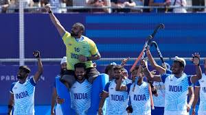

Hockey has been a prominent sport in the Olympics since it was first introduced in 1908 for men and in 1980 for women. As a fast-paced, high-energy game, hockey has captivated audiences with its blend of skill, strategy, and physicality. The Olympic stage has witnessed some of the sport's most intense rivalries and unforgettable moments, with nations like India, the Netherlands, Australia, and Germany traditionally dominating the medal standings. The competition has evolved over the years, with innovations in gameplay and technology enhancing the experience for players and fans alike. Today, Olympic hockey remains one of the most eagerly anticipated events, showcasing the best talent from around the globe and the unifying spirit of the Games.
